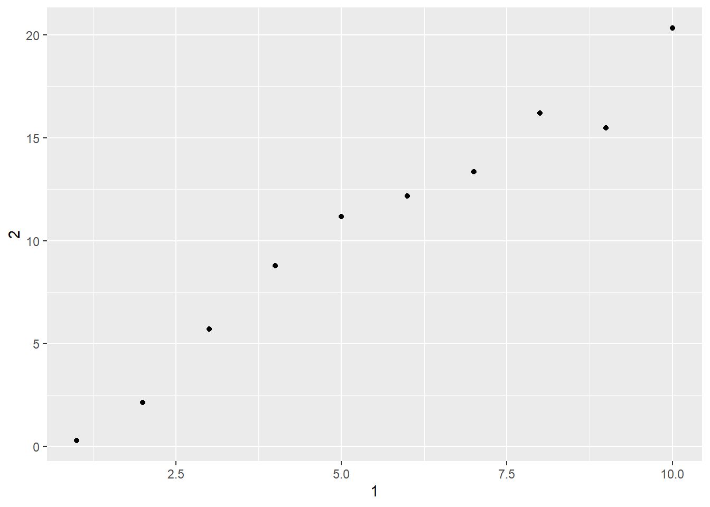

Capítulo 7 Tibbles com tibble
7.4 Interagindo com códigos mais antigos
Exercício 7.4.1
Como você consegue dizer se um objeto é um tibble? (Dica: tente imprimir mtcarts, que é um dat
Solução.
## mpg cyl disp hp drat wt qsec vs am gear carb
## Mazda RX4 21.0 6 160.0 110 3.90 2.620 16.46 0 1 4 4
## Mazda RX4 Wag 21.0 6 160.0 110 3.90 2.875 17.02 0 1 4 4
## Datsun 710 22.8 4 108.0 93 3.85 2.320 18.61 1 1 4 1
## Hornet 4 Drive 21.4 6 258.0 110 3.08 3.215 19.44 1 0 3 1
## Hornet Sportabout 18.7 8 360.0 175 3.15 3.440 17.02 0 0 3 2
## Valiant 18.1 6 225.0 105 2.76 3.460 20.22 1 0 3 1
## Duster 360 14.3 8 360.0 245 3.21 3.570 15.84 0 0 3 4
## Merc 240D 24.4 4 146.7 62 3.69 3.190 20.00 1 0 4 2
## Merc 230 22.8 4 140.8 95 3.92 3.150 22.90 1 0 4 2
## Merc 280 19.2 6 167.6 123 3.92 3.440 18.30 1 0 4 4
## Merc 280C 17.8 6 167.6 123 3.92 3.440 18.90 1 0 4 4
## Merc 450SE 16.4 8 275.8 180 3.07 4.070 17.40 0 0 3 3
## Merc 450SL 17.3 8 275.8 180 3.07 3.730 17.60 0 0 3 3
## Merc 450SLC 15.2 8 275.8 180 3.07 3.780 18.00 0 0 3 3
## Cadillac Fleetwood 10.4 8 472.0 205 2.93 5.250 17.98 0 0 3 4
## Lincoln Continental 10.4 8 460.0 215 3.00 5.424 17.82 0 0 3 4
## Chrysler Imperial 14.7 8 440.0 230 3.23 5.345 17.42 0 0 3 4
## Fiat 128 32.4 4 78.7 66 4.08 2.200 19.47 1 1 4 1
## Honda Civic 30.4 4 75.7 52 4.93 1.615 18.52 1 1 4 2
## Toyota Corolla 33.9 4 71.1 65 4.22 1.835 19.90 1 1 4 1
## Toyota Corona 21.5 4 120.1 97 3.70 2.465 20.01 1 0 3 1
## Dodge Challenger 15.5 8 318.0 150 2.76 3.520 16.87 0 0 3 2
## AMC Javelin 15.2 8 304.0 150 3.15 3.435 17.30 0 0 3 2
## Camaro Z28 13.3 8 350.0 245 3.73 3.840 15.41 0 0 3 4
## Pontiac Firebird 19.2 8 400.0 175 3.08 3.845 17.05 0 0 3 2
## Fiat X1-9 27.3 4 79.0 66 4.08 1.935 18.90 1 1 4 1
## Porsche 914-2 26.0 4 120.3 91 4.43 2.140 16.70 0 1 5 2
## Lotus Europa 30.4 4 95.1 113 3.77 1.513 16.90 1 1 5 2
## Ford Pantera L 15.8 8 351.0 264 4.22 3.170 14.50 0 1 5 4
## Ferrari Dino 19.7 6 145.0 175 3.62 2.770 15.50 0 1 5 6
## Maserati Bora 15.0 8 301.0 335 3.54 3.570 14.60 0 1 5 8
## Volvo 142E 21.4 4 121.0 109 4.11 2.780 18.60 1 1 4 2## Warning: `as.tibble()` was deprecated in tibble 2.0.0.
## ℹ Please use `as_tibble()` instead.
## ℹ The signature and semantics have changed, see `?as_tibble`.
## This warning is displayed once every 8 hours.
## Call `lifecycle::last_lifecycle_warnings()` to see where this warning was
## generated.## # A tibble: 32 × 11
## mpg cyl disp hp drat wt qsec vs am gear carb
## <dbl> <dbl> <dbl> <dbl> <dbl> <dbl> <dbl> <dbl> <dbl> <dbl> <dbl>
## 1 21 6 160 110 3.9 2.62 16.5 0 1 4 4
## 2 21 6 160 110 3.9 2.88 17.0 0 1 4 4
## 3 22.8 4 108 93 3.85 2.32 18.6 1 1 4 1
## 4 21.4 6 258 110 3.08 3.22 19.4 1 0 3 1
## 5 18.7 8 360 175 3.15 3.44 17.0 0 0 3 2
## 6 18.1 6 225 105 2.76 3.46 20.2 1 0 3 1
## 7 14.3 8 360 245 3.21 3.57 15.8 0 0 3 4
## 8 24.4 4 147. 62 3.69 3.19 20 1 0 4 2
## 9 22.8 4 141. 95 3.92 3.15 22.9 1 0 4 2
## 10 19.2 6 168. 123 3.92 3.44 18.3 1 0 4 4
## # ℹ 22 more rows## 'data.frame': 32 obs. of 11 variables:
## $ mpg : num 21 21 22.8 21.4 18.7 18.1 14.3 24.4 22.8 19.2 ...
## $ cyl : num 6 6 4 6 8 6 8 4 4 6 ...
## $ disp: num 160 160 108 258 360 ...
## $ hp : num 110 110 93 110 175 105 245 62 95 123 ...
## $ drat: num 3.9 3.9 3.85 3.08 3.15 2.76 3.21 3.69 3.92 3.92 ...
## $ wt : num 2.62 2.88 2.32 3.21 3.44 ...
## $ qsec: num 16.5 17 18.6 19.4 17 ...
## $ vs : num 0 0 1 1 0 1 0 1 1 1 ...
## $ am : num 1 1 1 0 0 0 0 0 0 0 ...
## $ gear: num 4 4 4 3 3 3 3 4 4 4 ...
## $ carb: num 4 4 1 1 2 1 4 2 2 4 ...## tibble [32 × 11] (S3: tbl_df/tbl/data.frame)
## $ mpg : num [1:32] 21 21 22.8 21.4 18.7 18.1 14.3 24.4 22.8 19.2 ...
## $ cyl : num [1:32] 6 6 4 6 8 6 8 4 4 6 ...
## $ disp: num [1:32] 160 160 108 258 360 ...
## $ hp : num [1:32] 110 110 93 110 175 105 245 62 95 123 ...
## $ drat: num [1:32] 3.9 3.9 3.85 3.08 3.15 2.76 3.21 3.69 3.92 3.92 ...
## $ wt : num [1:32] 2.62 2.88 2.32 3.21 3.44 ...
## $ qsec: num [1:32] 16.5 17 18.6 19.4 17 ...
## $ vs : num [1:32] 0 0 1 1 0 1 0 1 1 1 ...
## $ am : num [1:32] 1 1 1 0 0 0 0 0 0 0 ...
## $ gear: num [1:32] 4 4 4 3 3 3 3 4 4 4 ...
## $ carb: num [1:32] 4 4 1 1 2 1 4 2 2 4 ...## [1] "Mazda RX4" "Mazda RX4 Wag" "Datsun 710"
## [4] "Hornet 4 Drive" "Hornet Sportabout" "Valiant"
## [7] "Duster 360" "Merc 240D" "Merc 230"
## [10] "Merc 280" "Merc 280C" "Merc 450SE"
## [13] "Merc 450SL" "Merc 450SLC" "Cadillac Fleetwood"
## [16] "Lincoln Continental" "Chrysler Imperial" "Fiat 128"
## [19] "Honda Civic" "Toyota Corolla" "Toyota Corona"
## [22] "Dodge Challenger" "AMC Javelin" "Camaro Z28"
## [25] "Pontiac Firebird" "Fiat X1-9" "Porsche 914-2"
## [28] "Lotus Europa" "Ford Pantera L" "Ferrari Dino"
## [31] "Maserati Bora" "Volvo 142E"## [1] "1" "2" "3" "4" "5" "6" "7" "8" "9" "10" "11" "12" "13" "14" "15"
## [16] "16" "17" "18" "19" "20" "21" "22" "23" "24" "25" "26" "27" "28" "29" "30"
## [31] "31" "32"Há várias formas que podem nos ajudar a identificar se o conjunto de dados está organizado como um data frame padrão ou como um tibble:
- Ao utilizar o comando
print(), um data frame comum imprime todas as observações, enquanto um tibble imprime apenas as 10 primeiras; - Ao utilizar a função
str(), o tipo de objeto é impresso; - Ao utilizar a função
rownames(), um data frame exibirá os nomes das observações (se houver), enquanto um tibble exibirá sempre um sequ~encia numérica (???).
Exercício 7.4.2
Compare e constraste as seguintes operações em data.frame e tibble equivalente. Qual é a diferença? Por que os comportamentos do data frame padrão podem lhe causar frustração?
df <- data.frame(abc = 1, xyz = "a")
df$x
df[, "xyz"]
df[, c("abc", "xyz")]Solução. Inicialmente vamos definir um tibble com o mesmo conteúdo do data frame proposto.
A seguir, executaremos os comandos correspondentes para avaliar a saida.
## Warning: Unknown or uninitialised column: `x`.## NULL## # A tibble: 1 × 1
## xyz
## <chr>
## 1 a## # A tibble: 1 × 2
## abc xyz
## <dbl> <chr>
## 1 1 aConcluímos que:
- Ao utilizar o operador
$, o data frame busca exibir a primeira (?) coluna que contenhax, enquando num tibble, busca-se a coluna nomeada exatamente comox; - Ao utilizar o nome completo de uma única variável com o operador
[, um data frame imprime um vetor ou um valor singular, enquanto um tibble exibe sempre outro tibble; - ao usar o operador
[passando um vetor de variáveis, o data frame padrão retorna outro data frame e um tibble retorna outro tibble. Neste caso o comportamento é similar.
Exercício 7.4.3
Se você tem o nome de uma variável armazenada em um objeto, por exemplo var <- "mpg", como você pode extrair a variável de referência para um tibble?
Solução. Tanto para o data frame quanto para um tibble, é possível utilizar o operador [[.
## [1] 21.0 21.0 22.8 21.4 18.7 18.1 14.3 24.4 22.8 19.2 17.8 16.4 17.3 15.2 10.4
## [16] 10.4 14.7 32.4 30.4 33.9 21.5 15.5 15.2 13.3 19.2 27.3 26.0 30.4 15.8 19.7
## [31] 15.0 21.4## [1] 21.0 21.0 22.8 21.4 18.7 18.1 14.3 24.4 22.8 19.2 17.8 16.4 17.3 15.2 10.4
## [16] 10.4 14.7 32.4 30.4 33.9 21.5 15.5 15.2 13.3 19.2 27.3 26.0 30.4 15.8 19.7
## [31] 15.0 21.4Exercício 7.4.4
Pratique referir-se a nomes de variáveis não sintáticos, no data frame a seguir:
- Extrair a variável chamada 1.
- Plotar um diagrama de dispersão de 1 versus 2.
- Criar uma nova coluna chamada 3 que é 2 dividido por 1.
- Renomear as colunas para
one,twoethree.
Solução.
- Extrair a variável chamada 1.
## [1] 1 2 3 4 5 6 7 8 9 10- Plotar um diagrama de dispersão de 1 versus 2.

- Criar uma nova coluna chamada 3 que é 2 dividido por 1.
- Renomear as colunas para
one,twoethree.
## # A tibble: 10 × 3
## one two three
## <int> <dbl> <dbl>
## 1 1 0.846 0.846
## 2 2 3.63 1.81
## 3 3 6.53 2.18
## 4 4 6.71 1.68
## 5 5 9.84 1.97
## 6 6 11.0 1.84
## 7 7 14.3 2.04
## 8 8 14.3 1.79
## 9 9 17.6 1.95
## 10 10 21.1 2.11Exercício 7.4.5
O que tibble::enframe() faz? Quando você pode usá-lo?
Solução. Transforma um vetor de valores atômicos ou lista em um tibble de 2 colunas. É útil quando necessitarmos transformar um vetor em um dicionário ou uma lista de pares (nome, valor), por exemplo.
## # A tibble: 26 × 2
## name value
## <int> <chr>
## 1 1 a
## 2 2 b
## 3 3 c
## 4 4 d
## 5 5 e
## 6 6 f
## 7 7 g
## 8 8 h
## 9 9 i
## 10 10 j
## # ℹ 16 more rowsExercício 7.4.6
Que opção controla quantos nomes de colunas adicionais são impressos no rodapé de um tibble?
Solução. Pode-se usar a opção tibble.max_extra_cols.
## # A tibble: 32 × 11
## mpg cyl disp hp
## <dbl> <dbl> <dbl> <dbl>
## 1 21 6 160 110
## 2 21 6 160 110
## 3 22.8 4 108 93
## 4 21.4 6 258 110
## 5 18.7 8 360 175
## 6 18.1 6 225 105
## 7 14.3 8 360 245
## 8 24.4 4 147. 62
## 9 22.8 4 141. 95
## 10 19.2 6 168. 123
## # ℹ 22 more rows
## # ℹ 7 more variables:
## # drat <dbl>, wt <dbl>,
## # qsec <dbl>, vs <dbl>, …